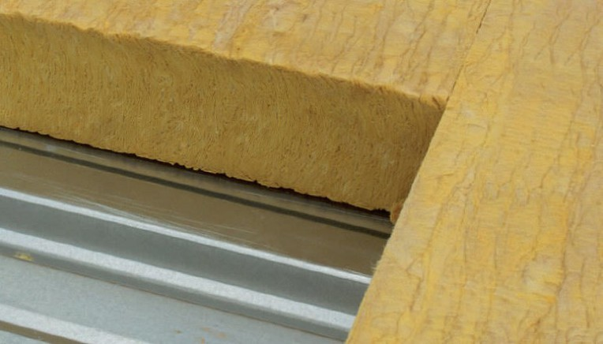
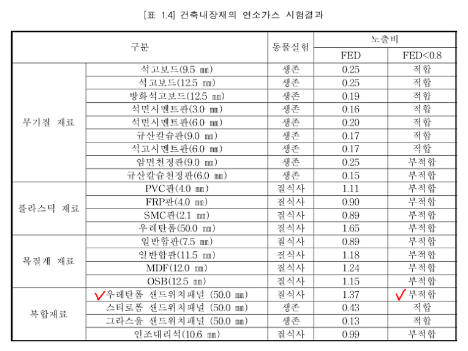

그라스울의 경우 스티로폼패널 다음으로 많이 생산되어 사용되고 있으나, 유리가루가 들어있는 분진으로 생산자 및 시공자들의 인체건강과 환경오염 문제가 대두되고 있으며,
그라스울 및 미네랄울은 실내오염물질의 하나로서 발암성을 의심받고 있고, 호흡기 문제와 피부자극성이 문제되고 있습니다.
또한 그라스울을 사용한 샌드위치패널은 수분의 흡수량이 높아 우천시에 물을 흡수하여 악취가 나는 등의 단점을 가지고 있습니다.
( 출처 : '화재안정성이 확보된 샌드위치패널 개발' p.9 , 한국국제대학교 산학협력단 , 2011, 기술표준원 연구)

☞ 표 설명 : 산업자원부 기술표준원에서 건축내장재의 연소가스를 조사하여 결과를 발표함. 미국재료시험학괴 시험방법에 따라 21종의 연소내장재의 연소시 발생하는 이산화탄소, 일산화탄소, 염화수소, 시안화수소, 브롬화수소 가스를 분석한 결과 동물실험에서 무기질재료, 스티로폴, 그라스울 등은 실험생물이 생존하여 미국방화협회 기준에 적합하다는 판정을 내렸으나 폴리우레탄, 일반플라스틱 재료와 합판 등 목질계는 실험동물의 질식사로 부적합 판정을 받았음. ( 출처 : 기술표준원 건설서비스과)